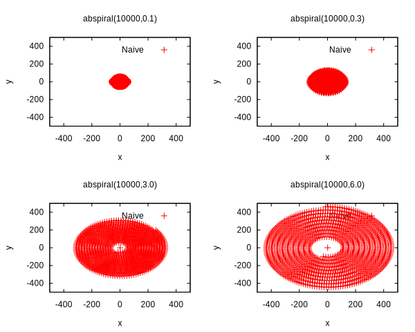
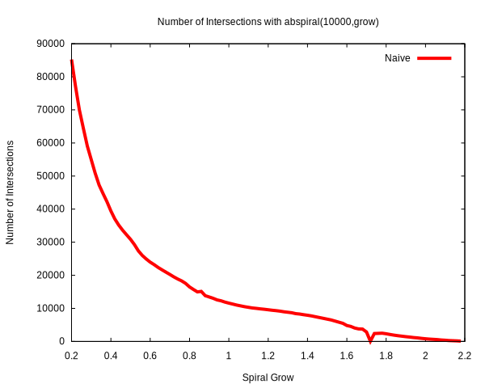

Test Setup
Before we can measure and compare performance of this algorithm, we have to come up with a good way to test it. We often want to see how performance degrades as the size of the problem increases, but we also do not want to influence any other variables. In this way a simple Archimedean spiral distribution of the bots is ideal. It allows us to grow the size of the problem without affecting the density of the bots. It also fills out the entire 2d space. If all the bots were dstributed along only one dimension then that would also skew our results. For example, sweep and prune will perform very well if all the bots are spaced out along the axis we are sweeping.
The spiral distribution takes 3 inputs:
- n: the number of bots
- separation: the seperation between the bots as they are laid out.
- grow rate: the rate at which the bots grow outward from the center.
We increase n to increase the size of the problem. We can increase the spiral_grow to decrease the number of bots intersecting.
While those 3 variables change the the distribution of the elements, there is another variable at play.
- aabb size (the bounding box size of each element)
For a lot of the benching in here, we just fix the size such that every element has the same size aabb. There is still a lot of interesting data analysis to do with elements that are all different sizes, but for now we'll just analyse cases where they are all the same.
Lets define a particular scene/distribution just so that it makes are benching simpler.
Let abspiral(n,grow) be a distribution of bots where:
- n=number of bots
- grow=spiral grow rate
- separation=constant (17)
- aabb radius=constant (5)
The constants are just values I pulled out of thin air. We just want all the elements to have some bounding box size and to influence how many of them are intersecting. This just makes things simpler since for most of the benches, we can typically show trends what we want to show by only influencing these two variables, so we might as well pick constants for the other variables and imbue that in the meaning of abspiral() itself.
The below chart shows how influencing the spiral_grow affects the number of bot intersections for abspiral(). This shows that we can influence the spiral grow to see how the performance of the tree degrades. We could influence how many bots are colliding with changing the separation, but the relationship to the grow rate and the number of intersection pairs makes a nice smooth downward graph.
It is not entirely smooth, but it is smooth enough that we can use this function to change the load on the dinotree without having to sample multiple times.
Testing correctness
Simply using rust has a big impact on testing. Because of its heavy use of static typing, many bugs are caught at compile time. This translates to less testing as there are fewer possible paths that the produced program can take. Also the fact that the api is generic over the underlying number type used is useful. This means that we can test the system using integers and we can expect it to work for floats. It is easier to test with integers since we can more easily construct specific scenarios where one number is one value more or less than another. So in this way we can expose corner cases.
A good test is a test that tests with good certainty that a large portion of code is working properly. Maintaining tests comes at the cost of anchoring down the design of the production code in addition to having to be maintained themselves. As a result, making good abstractions between your crates and modules that have simple and well defined apis is very important. Then you can have a few simple tests to fully excersise an api and verify large amounts of code.
This crate's sole purpose is to provide a method of providing collision detection that is faster than the naive method. So a good high level test would be to compare the query results from using this crate to the naive method (which is much easier to verify is correct). This one test can be performed on many different inputs of lists of bots to try to expose any corner cases. So this one test when fed with both random and specifically tailed inputs to expose corner cases, can show with a lot of certainty that the crate is satisfying the api.
The tailored inputs is important. For example, a case where two bounding boxes collide but only at the corner is an extremely unlikely case that may never present themselves in random inputs. To test this case, we have to turn to more point-directed tests with specific constructed set up input bot lists. They can still be verified in the same manner, though.
Benching
Writing benches that validate every single piece of the algorithm design is a hassle although it would be nice. Ideally you dont want to rely on my word to say that, for example, using sweep and prune to find colliding pairs actually sped things up. It could be that while the algorithm is correct and fast that this particular aspect of the algorithm actually slows things down.
So I dont think writing low level benches are worth it. If you are unsure of a piece of code, you can bench the algorithm as a whole, change a piece of the algorithm, and bench again and compare results. Because at the end of the day, we already tested the correctness, and that is the most important thing. So I think this strategy, coupled with code coverage and just general reasoning of the code can supplement tons of benches to validate the innards of the algorithm.
Always measure code before investing time in optimizing. As you design your program. You form in your mind ideas of what you think the bottle necks in your code are. When you actually measure your program, your hunches can be wildly off.
When dealing with parallelism, benching small units can give you a warped sense of performance. Onces the units are combined, there may be more contention for work stealing. With small units, you have a false sense that the cpu's are not busy doing other things. For example, I parallalized creating the container range for each node. Benchmarks showed that it was faster. But when I benched the rebalancing as a whole, it was slower with the parallel container creation. So in this way, benching small units isnt quite as useful as testing small units is. That said, if you know that your code doesnt depend on some global resource like a threadpool, then benching small units is great.
Platform dependance. Rust is a great language that strives for platform independant code. But at the end of the day, even though rust programs will behave the same on multiple platforms, their performance might be wildly different. And as soon as you start optimizing for one platform you have to wonder whether or not you are actually de-optimizing for another platform. For example, rebalancing is much slower on my android phone than querying. On my dell xps laptop, querying is the bottle neck instead. I have wondered why there is this disconnect. I think part of it is that rebalancing requires a lot of sorting, and sorting is something where it is hard to predict branches. So my laptop probably has a superior branch predictor. Another possible reason is memory writing. Rebalancing involves a lot of swapping, whereas querying does involve in any major writing to memory outside of what the user decides to do for each colliding pair. In any case, my end goal in creating this algorithm was to make the querying as fast as possible so as to get the most consistent performance regardless of how many bots were colliding.
Dynamic Allocation
Sure dynamic allocation is "slow", but that doesn't mean you should avoid it. You should use it as a tool to speed up a program. It has a cost, but the idea is that with that allocated memory you can get more performance gains.
The problem is that everybody has to buy into the system for it to work. Anybody who allocated a bunch of memory and doesn't return it because they want to avoid allocating it again is hogging that space for longer than it needs it.
Dynamic allocation is fast. Dynamically allocating large vecs in one allocation is fast. Its only when you're dynamically allocting thousands of small objects does it become bad. Even then, probably the allocations are fast, but because the memory will likely be fragmented, iterating over a list of those objects could be very slow. Concepually, I have to remind myself that if you dynamically allocate a giant block, its simply reserving that area in memory. There isnt any expensive zeroing out of all that memory unless you want to do it. That's not to say the complicated algorithms the allocator has to do arn't complicated, but still relatively cheap.
Often times, its not the dynamic allocation that is slow, but some other residial of doing it in the first place. For example, dynamically allocating a bunch of pointers to an array, and then sorting that list of pointers. The allocation is fast, its just that there is no cache coherency. Two pointers in your list of pointers could very easily point to memory locations that are very far apart.
Writing apis that don't do dynamic allocation is tough and can be cumbursome, since you probably have to have the user give you a slice of a certain size. On the other hand this let's the user know exactly how much memory your crate needs. But users should have some faith that a dynamic allocation system is good enough for most purposes to justify a more complicated api where users have to manually manage memory.
The thing is that if you don't use dynamic allocation, and you instead reserve some giant piece of memory for use of your system, then that memory is not taken advanage of when your system is not using it. It is wasted space. If you know your system will always be using it then sure it is fine. But I can see this system being used sometimes only 30 times a second. That is a lot of inbetween time where that memory that cannot be used by anything else. So really, the idea of dynamic allocation only works is everybody buys into the system. Another option is to make your api flexible enough that you pass is a slice of "workspace" memory, so that the user can decide whether to dynamically allocate it everytime or whatever. But this complicates the api for a very small portion of users who would want to not using the standard allocator.